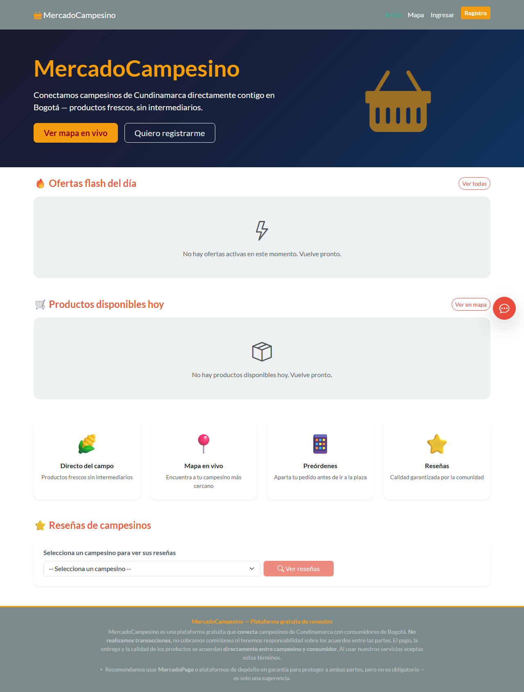
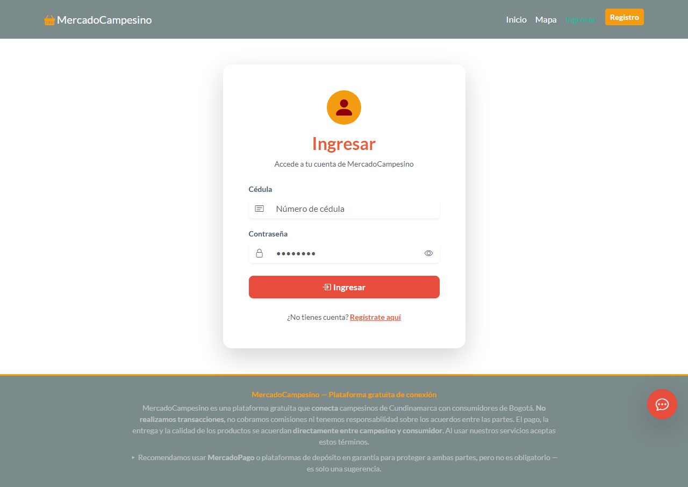
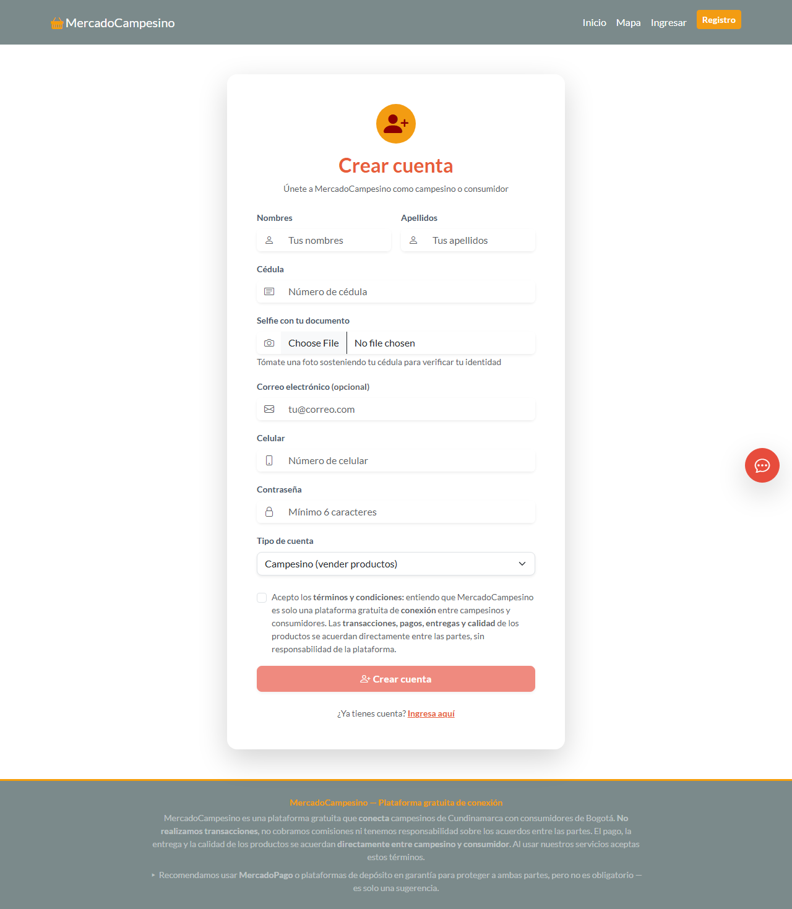
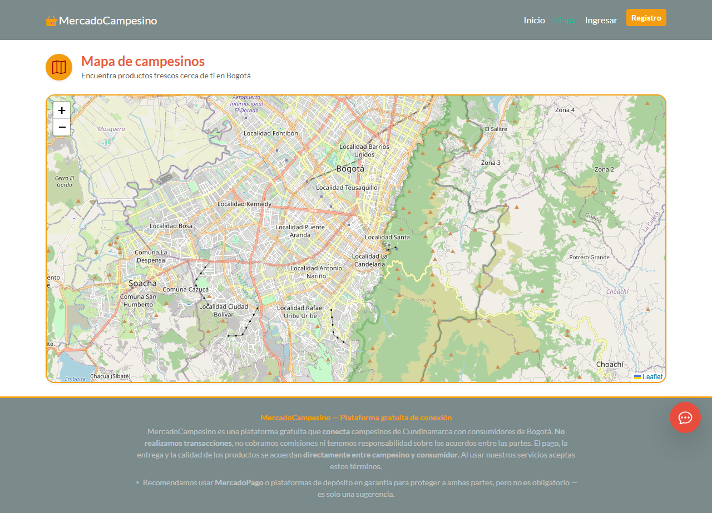
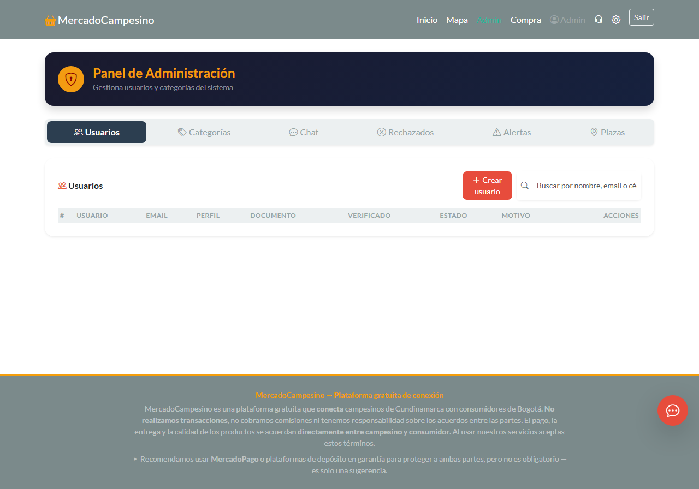
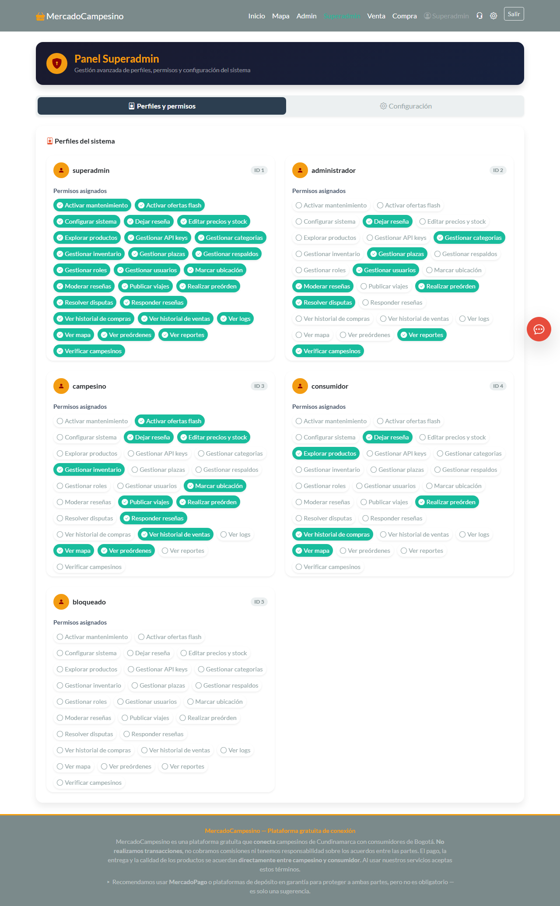

A los campesinos de Cundinamarca, que madrugan antes del alba para llevar el fruto de su trabajo a las plazas de Bogotá. Que esta herramienta sea un pequeño paso para que su esfuerzo sea reconocido y recompensado como merece.
A nuestras familias, por su paciencia y apoyo incondicional durante este camino académico.
A la Corporación Unificada Nacional de Educación Superior — CUN, por brindarnos los conocimientos y el espacio para desarrollar este proyecto.
A nuestros profesores y asesores, por su guía, correcciones y enseñanzas que hicieron posible llegar hasta aquí.
A los 23 campesinos de la Plaza 20 de Julio y Abastos que generosamente compartieron su tiempo, sus experiencias y sus necesidades, permitiéndonos construir una solución que responda a su realidad.
A los consumidores que participaron en las entrevistas, por creer en esta idea y ayudarnos a mejorarla.
A todos, infinitas gracias.
Resumen .......................................................................................... 8
Abstract ........................................................................................... 9
Preliminares .................................................................................... 10
Declaración de originalidad y autonomía ........................................ 10
Declaración de exoneración de responsabilidad ............................... 11
1 Introducción .................................................................................. 12
2 Planteamiento del problema ............................................................ 15
2.1 Formulación o Pregunta de Investigación .................................... 16
3 Objetivos ....................................................................................... 17
3.1 Objetivo general ....................................................................... 17
3.2 Objetivos específicos ................................................................ 17
4 Justificación .................................................................................. 19
5 Alcances y Limitaciones del Proyecto ............................................. 20
6 Marco Referencial ......................................................................... 21
6.1 Antecedentes ......................................................................... 23
6.2 Marco teórico ......................................................................... 24
6.3 Marco Conceptual .................................................................... 24
6.4 Marco legal ............................................................................ 25
7 Metodología ................................................................................... 25
7.1 Enfoque de investigación ............................................................ 26
7.2 Tipos de investigación ................................................................ 27
7.3 Diseños de Investigación ............................................................ 28
7.4 Población y muestra .................................................................. 28
7.5 Plan de análisis de la información ............................................... 29
7.5.1 Instrumentos de recolección de información ............................... 29
7.6 Cronograma ............................................................................. 29
7.7 Presupuesto ............................................................................. 29
8 Desarrollo de las fases del proyecto .................................................. 31
9 Resultados esperados ...................................................................... 32
10 Conclusiones ................................................................................ 34
Referencias bibliográficas ................................................................... 36
Anexo — Historias de usuario ............................................................... 38
Los campesinos de Cundinamarca viajan a Bogotá con sus cosechas, pero en múltiples ocasiones no logran comercializar la totalidad de sus productos, lo que los obliga a desecharlos. Adicionalmente, los intermediarios absorben la mayor parte del margen de ganancia, generando que el productor reciba un precio bajo mientras el consumidor final paga un valor elevado. El presente proyecto propone crear MercadoCampesino, una plataforma web accesible desde cualquier dispositivo móvil que conecta directamente al campesino con los consumidores en Bogotá. La plataforma permite que el campesino publique con antelación los productos que llevará, que los consumidores realicen preórdenes, y que al llegar a la plaza el vendedor señale su ubicación en un mapa para que los compradores lo encuentren fácilmente. También incluye la funcionalidad de ofertas flash para evitar el retorno de mercancía no vendida. Los consumidores pueden consultar en tiempo real qué productos están disponibles, a qué precio y quién los ofrece, además de dejar reseñas que fomentan la confianza entre las partes. Se concluye que una herramienta tecnológica sencilla, accesible desde cualquier teléfono celular y que no gestione pagos dentro de la plataforma, puede contribuir a que los campesinos incrementen sus ventas, los consumidores accedan a precios más justos y se reduzca el desperdicio de alimentos.
Farmers from Cundinamarca travel to Bogotá with their harvest, but many times they cannot sell everything and have to throw food away. Middlemen absorb most of the profit margin, so farmers earn little and consumers pay more than necessary. This project proposes MercadoCampesino, a web platform accessible from any mobile device that connects farmers directly with consumers in Bogotá. Farmers can post in advance what they are bringing, consumers can place pre-orders, and when the farmer arrives at the market square, they can mark their stall on a map so buyers can find them easily. The platform also includes flash offer functionality to avoid taking unsold produce back home. Consumers can see in real time who is selling, what products are available and at what price, and leave reviews that build trust between parties. It is concluded that a simple technological tool, accessible from any cell phone and without handling payments within the platform, can help farmers increase their sales, consumers access fairer prices, and reduce food waste.
Declaramos bajo la gravedad del juramento, que hemos escrito el presente proyecto, en la propuesta de solución a una problemática en el campo de conocimientos del programa de Ingeniería de Sistemas por nuestra propia cuenta y que, por lo tanto, su contenido es original.
Declaramos que hemos indicado clara y precisamente todas las fuentes directas e indirectas de información y que no ha sido entregado a ninguna otra institución con fines de calificación o publicación.
(Nombre 1 - Apellidos completos)
(Nombre 2 - Apellidos completos)
(Nombre 3 - Apellidos completos)
Firmado en Bogotá, Cundinamarca, 24 de julio de 2026
Declaramos que la responsabilidad intelectual del presente trabajo es exclusivamente de sus autores. La Corporación Unificada Nacional de Educación Superior — CUN no se hace responsable de contenidos, opiniones o ideologías expresadas total o parcialmente en él.
(Nombre 1 - Apellidos completos)
(Nombre 2 - Apellidos completos)
(Nombre 3 - Apellidos completos)
Firmado en Bogotá, Cundinamarca, 24 de julio de 2026
Colombia es un país con una vocación agrícola significativa; sin embargo, quienes cultivan la tierra enfrentan condiciones adversas que limitan su rentabilidad. Los campesinos de Cundinamarca inician su jornada antes del amanecer, viajan durante horas hasta Bogotá, asumen el costo de un puesto en la plaza de mercado y, al finalizar la jornada, en numerosas ocasiones regresan con gran parte de la cosecha sin vender, la cual termina siendo desechada. A esta pérdida se suma la intervención de intermediarios que absorben la mayor parte del margen de ganancia, de modo que el productor recibe un ingreso mínimo mientras el consumidor final paga un precio elevado.
Paralelamente, los habitantes de Bogotá que desean adquirir frutas y verduras frescas a precios razonables carecen de información sobre la ubicación exacta del puesto del campesino, los productos disponibles cada día y sus precios. La dinámica actual obliga al comprador a recorrer la plaza sin certeza de encontrar lo que necesita.
Ante esta situación, se propone el desarrollo de MercadoCampesino, una plataforma web accesible desde cualquier dispositivo móvil sin necesidad de instalación. El campesino puede publicar con anticipación los productos que llevará al mercado, especificando cantidades y precios, y los consumidores pueden realizar preórdenes desde su hogar. Al llegar a la plaza, el vendedor señala su ubicación en un mapa interactivo para que los compradores lo localicen con facilidad. Si al final de la jornada queda producto sin vender, el campesino puede activar una oferta flash desde su teléfono, y los usuarios cercanos reciben la información al instante.
El desarrollo tecnológico de la plataforma utiliza Angular para la interfaz de usuario, FastAPI (Python) para la lógica del servidor y PostgreSQL como motor de base de datos. La funcionalidad de mapas se implementa con Leaflet.js, una librería de código abierto. Las transacciones económicas se realizan directamente entre el campesino y el comprador, sin intervención de la plataforma, preservando la dinámica tradicional de la plaza de mercado.
Un principio fundamental del diseño arquitectónico es que el sistema sea parametrizable y normalizado. La base de datos se estructura bajo la tercera forma normal (3NF) para eliminar redundancias, y ningún valor crítico se encuentra hardcodeado en el código fuente. Aspectos como los tipos de calidad del producto, las categorías, los límites de ofertas flash, los puntajes para bloqueo de usuarios y los tiempos de expiración se gestionan desde el panel de administración sin requerir modificaciones al código. Esta flexibilidad permite que el sistema se adapte a diferentes contextos operativos sin intervención técnica.
El presente proyecto persigue tres beneficios fundamentales: incrementar los ingresos del campesino mediante la venta directa, reducir el desperdicio de alimentos y ofrecer a los consumidores bogotanos productos más frescos a precios más competitivos.
Los campesinos de Cundinamarca que comercializan sus productos en plazas de mercado como Paloquemao, 20 de Julio, 7 de Agosto y Abastos enfrentan tres problemáticas estructurales que limitan su sostenibilidad económica. En primer lugar, la incertidumbre sobre la demanda: el productor sale de su vereda sin conocer cuántos compradores asistirán ni qué cantidad de producto logrará colocar, lo que genera jornadas en las que no se vende ni la mitad de la carga. En segundo lugar, la pérdida de la cosecha no comercializada: al finalizar la jornada, el producto perecedero que no se vendió debe desecharse, ya que se deteriora durante el transporte de regreso o simplemente no puede almacenarse, representando una pérdida económica directa y contribuyendo al desperdicio de alimentos. En tercer lugar, la intermediación excesiva: los intermediarios absorben la mayor parte del margen de ganancia, de modo que el campesino recibe un precio reducido por su producto mientras el consumidor final paga un valor significativamente mayor.
En la actualidad no existe una herramienta tecnológica diseñada específicamente para la dinámica de las plazas de mercado bogotanas. Las plataformas de comercio electrónico generalistas como Mercado Libre u OLX no se adaptan a las necesidades particulares de este contexto: no permiten anunciar productos antes del viaje, no ofrecen geolocalización en tiempo real del puesto de venta, no facilitan el ajuste dinámico de precios ni la activación de ofertas de último minuto para minimizar el retorno de mercancía no vendida.
Las causas de esta situación se originan en la ausencia de canales de comunicación directa entre productor y consumidor, la falta de herramientas tecnológicas accesibles y de bajo costo adaptadas al contexto rural, y un sistema de comercialización que históricamente ha dependido de intermediarios. Como efectos directos se observan la reducción sostenida de los ingresos de los campesinos, el desperdicio creciente de alimentos en las plazas de mercado, el desincentivo para que las nuevas generaciones continúen con la actividad agrícola y el consecuente aumento de la dependencia alimentaria de Bogotá respecto a grandes superficies comerciales.
Actualmente, el campesino inicia su jornada aproximadamente a las tres de la madrugada, alista la cosecha, la transporta durante dos o tres horas hasta Bogotá, paga por el derecho de uso del puesto en la plaza de mercado y espera la llegada de los compradores sin haber tenido la posibilidad de anunciar su oferta ni recibir pedidos anticipados. Carece de mecanismos para informar a los consumidores sobre los productos que lleva, sus precios y su ubicación exacta dentro de la plaza. Al cierre de la jornada, el excedente no vendido debe ser desechado o regalado, y el producto que logra devolverse a la vereda se deteriora durante el trayecto, resultando igualmente en pérdida total.
Si esta situación persiste sin intervención, es previsible que los jóvenes del ámbito rural migren hacia las ciudades en búsqueda de oportunidades laborales distintas a la agricultura, profundizando el relevo generacional en el campo. Bogotá incrementará su dependencia de las grandes cadenas de supermercados, y el desperdicio de alimentos en las plazas continuará en aumento. La implementación de una plataforma tecnológica que facilite la conexión directa entre productor y consumidor, permita la realización de preórdenes y la activación de ofertas de último minuto, representa una alternativa viable para mitigar esta problemática.
¿Es posible desarrollar una plataforma web accesible desde cualquier dispositivo móvil, en la cual los campesinos publiquen anticipadamente los productos que llevarán a la plaza, los consumidores realicen apartados, y mediante un mapa en tiempo real junto con ofertas de último minuto se logre reducir el desperdicio de alimentos y aumentar los ingresos del productor a través de la venta directa sin intermediarios?
Desarrollar una plataforma web que funcione en dispositivos móviles, denominada MercadoCampesino, con el propósito de facilitar la comercialización directa entre campesinos de Cundinamarca y consumidores de Bogotá, mediante funcionalidades de preórdenes, geolocalización en tiempo real del puesto de venta, ajuste dinámico de precios y activación de ofertas flash, contribuyendo así a la reducción del desperdicio de alimentos y al incremento de los ingresos del productor.
El desarrollo de MercadoCampesino se fundamenta en la necesidad de transformar la dinámica de comercialización en las plazas de mercado de Bogotá, donde la asimetría de información y la intervención de intermediarios generan ineficiencias que afectan tanto al productor como al consumidor. Desde una perspectiva social, la plataforma busca restablecer el equilibrio en la cadena de valor, permitiendo que el campesino reciba un precio justo por su trabajo y que el consumidor acceda a productos frescos a un costo razonable. La eliminación de intermediarios redunda en un beneficio directo para ambas partes, fortaleciendo el tejido económico local y promoviendo la sostenibilidad de la agricultura familiar en Cundinamarca.
En el ámbito ambiental, la reducción del desperdicio de alimentos constituye una de las prioridades globales más apremiantes. Según la Organización de las Naciones Unidas para la Alimentación y la Agricultura (FAO), aproximadamente un tercio de los alimentos producidos en el mundo se pierde o desperdicia. MercadoCampesino contribuye a mitigar este problema al permitir que el campesino anticipe su oferta y que, mediante las ofertas flash, logre colocar el producto que de otra manera sería desechado al finalizar la jornada. Cada kilogramo de alimento que se vende gracias a la plataforma es un kilogramo que no se desperdicia, con el consiguiente impacto positivo en la huella ecológica asociada a la producción y transporte de alimentos.
Desde el punto de vista tecnológico y académico, el proyecto resulta viable porque se sustenta en herramientas modernas, de código abierto y sin costo de licenciamiento: Angular para el frontend, FastAPI para el backend, PostgreSQL para la base de datos y Leaflet.js para la cartografía. La decisión de no gestionar pagos dentro de la plataforma elimina barreras regulatorias y de seguridad que habrían complicado significativamente el desarrollo, permitiendo enfocar los recursos en las funcionalidades que generan valor directo al usuario. El carácter parametrizable del sistema garantiza que la plataforma pueda adaptarse a cambios en el entorno operativo sin requerir modificaciones al código fuente, lo que constituye un diferenciador importante frente a soluciones existentes.
Cabe destacar que en el contexto colombiano actual no existe una plataforma que integre todas las funcionalidades propuestas —preórdenes anticipadas, geolocalización en vivo, calidades diferenciadas por producto y ofertas flash— diseñada específicamente para las plazas de mercado. Esta ausencia de alternativas consolida la pertinencia del proyecto y su potencial para generar un impacto significativo en el sector agrícola local.
La plataforma funciona en cualquier dispositivo móvil (Android y iOS) sin necesidad de descarga desde tiendas de aplicaciones, al ser una PWA instalable desde el navegador.
El marco referencial constituye la base teórica, conceptual, contextual y legal sobre la cual se sustenta el desarrollo de MercadoCampesino. Su propósito fundamental es proporcionar una visión integral de las contribuciones académicas, las experiencias prácticas y el entorno normativo que rodean el objeto de estudio, de manera que el lector pueda comprender no solo el estado del arte de las plataformas de comercio directo entre productores y consumidores, sino también las condiciones geográficas, sociales, económicas, políticas y ambientales que determinan la viabilidad y pertinencia del proyecto.
En este apartado se desarrollan a groso modo las contribuciones e inconsistencias teóricas que se constituyen en referentes para el diseño metodológico y el análisis del corpus documental. Se describe lo que se sabe del objeto de la investigación —en este caso, la comercialización directa de productos agrícolas en plazas de mercado mediada por tecnología digital— luego de una revisión de las teorías representativas en busca de fundamentación que permita soportar y contrastar los resultados de la investigación. Todo el contenido ha sido producto de una identificación cuidadosa de las variables y categorías que permean el proyecto y de una búsqueda concienzuda de información pertinente en fuentes recientes y de calidad, siguiendo las Normas APA Séptima Edición (American Psychological Association, 2020) y las directrices de la Corporación Unificada Nacional (2024).
El marco referencial se estructura en cinco grandes bloques que abordan dimensiones complementarias del problema de investigación. El primero, los antecedentes (sección 6.1), presenta un análisis crítico de las plataformas y estudios previos que han abordado problemáticas similares, tanto a nivel nacional como internacional, identificando los vacíos que MercadoCampesino busca cubrir. El segundo, el marco teórico (sección 6.2), expone los fundamentos conceptuales que sustentan la propuesta desde cuatro pilares: el comercio electrónico agrícola, los modelos de venta directa, los sistemas de información geográfica y las teorías de adopción tecnológica. El tercero, el marco conceptual (sección 6.3), define los términos técnicos fundamentales para la correcta comprensión del proyecto, todos ellos respaldados por citas académicas. El cuarto, el marco contextual (sección 6.4), delimita con precisión el entorno geográfico, histórico, sociocultural, económico, político y ambiental donde se inserta la plataforma. Por último, el marco legal (sección 6.5) analiza las disposiciones normativas colombianas que enmarcan la operación de la plataforma.
Las fuentes citadas en este marco referencial han sido seleccionadas siguiendo criterios de vigencia (publicaciones de los últimos cinco años, complementadas con obras clásicas de referencia), calidad académica (revistas indexadas, libros universitarios y normativa oficial) y pertinencia temática. Se ha priorizado la citación en paráfrasis como forma de demostrar lectura, análisis y redacción propios, limitando las citas textuales a los casos estrictamente necesarios, como la denominación oficial de las leyes colombianas. Este enfoque asegura que el porcentaje de redacción original del documento se mantenga en los niveles aceptados institucionalmente, estimados en un 75 % de contenido propio y un 25 % de citas de otros autores, debidamente referenciadas (Corporación Unificada Nacional, 2024).
El comercio electrónico de alimentos ha experimentado un crecimiento acelerado en la última década (Organización de las Naciones Unidas para la Alimentación y la Agricultura [FAO], 2019). A continuación se analizan las investigaciones y plataformas existentes que, aunque no están diseñadas específicamente para plazas de mercado, comparten funcionalidades que sirvieron como referencia para MercadoCampesino. Se presentan antecedentes nacionales e internacionales con una vigencia máxima de cinco años, según lo recomendado por la Corporación Unificada Nacional (2024).
Mercado Libre es la plataforma de comercio electrónico más grande de América Latina y cuenta con un sistema de reputación que permite a compradores y vendedores calificarse mutuamente después de cada transacción (Mercado Libre, 2024). Las calificaciones (1 a 5 estrellas) y los comentarios escritos son visibles para toda la comunidad, generando confianza y transparencia en el ecosistema. Este modelo de reputación ha sido ampliamente estudiado en la literatura académica como un mecanismo efectivo para reducir la asimetría de información en mercados digitales (Resnick et al., 2006). MercadoCampesino tomó este modelo como referencia para implementar su propio sistema de reseñas mutuas entre campesinos y consumidores, adaptándolo al contexto de las plazas de mercado: la reseña se deja después de la compra directa (no dentro de la plataforma) y permite tanto al campesino como al consumidor calificar la experiencia. A diferencia de Mercado Libre, MercadoCampesino limita a una reseña por día entre los mismos actores para evitar spam, y permite que el campesino responda públicamente a las reseñas recibidas, creando un diálogo abierto similar al que ocurre naturalmente en la plaza.
Otras plataformas como Rappi y Didi Food implementan sistemas de calificación para repartidores y restaurantes, donde el usuario valora la rapidez, la calidad del producto y la atención (Rappi, 2023; Didi Global, 2023). Estas plataformas han sido objeto de análisis en estudios sobre economía de plataformas en América Latina, donde se ha señalado que su modelo logístico centralizado limita la participación directa de pequeños productores (Madariaga et al., 2019). Rappi y Didi Food operan con un repartidor que recoge y entrega, y no permiten la venta directa sin intermediarios ni la geolocalización del puesto de venta físico, que son pilares fundamentales de MercadoCampesino.
OLX y Facebook Marketplace funcionan como clasificados en línea donde el vendedor publica un producto y el comprador contacta directamente (OLX Group, 2024; Meta Platforms, 2024). Estas plataformas permiten la venta de productos agrícolas, pero carecen de funcionalidades especializadas como preórdenes anticipadas, gestión de calidades diferenciadas por producto, geolocalización en vivo del vendedor u ofertas flash de último minuto. Además, no cuentan con un sistema de verificación robusto de la identidad del vendedor, lo que en el contexto de las plazas de mercado es crítico para generar confianza (Gómez & Ricketts, 2013).
A nivel internacional, existen iniciativas como Farmers Market Online en Estados Unidos y La Ruche qui dit Oui en Francia, que conectan productores locales con consumidores mediante pedidos anticipados y puntos de entrega (La Ruche qui dit Oui, 2024; Farmers Market Coalition, 2023). Sin embargo, estas plataformas operan bajo modelos logísticos distintos: el productor entrega en un punto centralizado y no vende directamente en una plaza de mercado. Tampoco incorporan la funcionalidad de geolocalización en vivo ni ofertas flash para evitar el retorno de mercancía no vendida. Estudios europeos sobre estos modelos han demostrado que, si bien mejoran la trazabilidad y la confianza del consumidor, enfrentan desafíos en la escalabilidad y la logítica de última milla (Kneafsey et al., 2013).
En el contexto colombiano, la Secretaría de Desarrollo Económico de Bogotá ha impulsado ferias campesinas y rutas cortas de comercialización (Secretaría de Desarrollo Económico, 2020), pero estas iniciativas son presenciales y no cuentan con un componente tecnológico que permita la interacción digital entre productor y consumidor. Un estudio realizado por el Departamento Nacional de Planeación (2018) identificó que la falta de canales digitales de comercialización es una de las principales barreras para la inclusión financiera y comercial de los pequeños productores agrícolas en Colombia. Proyectos académicos en universidades colombianas como la Universidad Nacional y la CUN han abordado temas de comercio electrónico rural, aunque ninguno se ha enfocado en la problemática específica de la pérdida de cosecha en plazas de mercado ni en el modelo de venta directa sin intermediarios con geolocalización en tiempo real.
Como antecedente adicional, el estudio de Aker (2011) sobre el uso de tecnologías de información y comunicación (TIC) en la agricultura en países en desarrollo demostró que el acceso a información de mercados a través de teléfonos móviles puede reducir significativamente la dispersión de precios y mejorar la eficiencia de los mercados agrícolas. Este hallazgo es particularmente relevante para MercadoCampesino, ya que valida la hipótesis central del proyecto: que una herramienta tecnológica accesible puede transformar positivamente la comercialización agrícola en contextos de bajos recursos.
De esta revisión se concluye que existe un vacío claro en el ecosistema digital colombiano y latinoamericano: no hay una plataforma accesible desde cualquier dispositivo móvil que combine preórdenes anticipadas, geolocalización en vivo del puesto de venta, calidades diferenciadas por producto y ofertas flash, diseñada específicamente para las plazas de mercado. MercadoCampesino busca llenar ese vacío.
El marco teórico de esta investigación se sustenta en cuatro pilares fundamentales que, en conjunto, proporcionan una base conceptual sólida para el diseño e implementación de la plataforma: las teorías de comercio electrónico aplicado a la agricultura (agri-ecommerce), los modelos de venta directa productor-consumidor (farm-to-table), los sistemas de información geográfica aplicados a mercados locales y las teorías de adopción tecnológica en comunidades rurales.
Comercio electrónico agrícola (agri-ecommerce). El uso de plataformas digitales para facilitar la comercialización de productos del campo ha sido objeto de creciente atención académica en la última década. Verhoef et al. (2015) establecieron que la adopción de tecnologías digitales en la agricultura puede reducir significativamente los costos de transacción y mejorar el acceso a mercados, especialmente cuando se eliminan intermediarios en la cadena de valor. No obstante, estos autores advierten que la tasa de adopción en comunidades rurales de países en desarrollo sigue siendo baja debido a barreras de alfabetización digital y acceso a internet, un hallazgo que se corroboró en el trabajo de campo del presente proyecto, donde el 17 % de los campesinos entrevistados no poseía teléfono inteligente. Estudios más recientes como el de Kumar & Reinartz (2016) profundizan en la creación de valor sostenible a través de canales digitales, señalando que la confianza y la transparencia son factores críticos para el éxito de las plataformas de comercio electrónico en mercados emergentes.
Modelos de venta directa productor-consumidor. El modelo farm-to-table o de venta directa elimina la intervención de intermediarios, permitiendo que el productor capture un mayor margen de ganancia y que el consumidor pague un precio más bajo. Renting et al. (2003) demostraron que las redes alimentarias alternativas (alternative food networks) fortalecen la economía local y generan confianza entre las partes al establecer relaciones cara a cara. Estos autores identificaron tres características distintivas de las redes alimentarias alternativas: la proximidad geográfica entre productor y consumidor, la transparencia en la información sobre el origen y la producción de los alimentos, y la construcción de relaciones de confianza a través del contacto directo y repetido. MercadoCampesino adopta este modelo, pero lo potencia mediante herramientas digitales que facilitan el encuentro entre oferta y demanda, superando las limitaciones de alcance y tiempo que caracterizan a las redes presenciales tradicionales. En este sentido, el proyecto se alinea con lo que autores como Marsden et al. (2000) denominaron "reconexión" entre productores y consumidores a través de canales cortos de comercialización mediados por tecnología.
Sistemas de información geográfica (SIG) aplicados a mercados locales. Los sistemas de información geográfica y el mapeo web permiten representar visualmente la ubicación de los vendedores en un espacio físico. Leaflet.js, la librería de código abierto utilizada en este proyecto, ha sido ampliamente adoptada por la comunidad de desarrollo por su ligereza, facilidad de integración y compatibilidad con múltiples fuentes de datos geoespaciales (Agafonkin, 2024). Estudios como el de Goodchild (2007) sobre la "infraestructura de datos espaciales" sentaron las bases teóricas para entender cómo la información geográfica puede integrarse en sistemas de información cotidianos para mejorar la toma de decisiones. La combinación de mapas interactivos con datos de productos en tiempo real constituye una innovación práctica para las plazas de mercado, donde la ubicación exacta del puesto es un factor determinante para la venta, como lo señalaron los propios campesinos durante las entrevistas de campo.
Adopción tecnológica en comunidades rurales. La teoría de la difusión de innovaciones de Rogers (2003) proporciona un marco conceptual para entender cómo y por qué los individuos adoptan nuevas tecnologías. Según este autor, cinco atributos determinan la tasa de adopción: la ventaja relativa, la compatibilidad, la complejidad, la posibilidad de prueba y la observabilidad. En el contexto de MercadoCampesino, la ventaja relativa (incremento de ventas y reducción de pérdida de producto) y la compatibilidad (uso de teléfonos inteligentes que el 83 % de los campesinos ya posee) son los atributos más favorables. El modelo de aceptación tecnológica (TAM) propuesto por Davis (1989) complementa esta visión al enfatizar la utilidad percibida y la facilidad de uso percibida como predictores clave de la intención de uso de un sistema. Estos fundamentos teóricos guiaron el diseño de la interfaz de usuario de la plataforma, priorizando la simplicidad, los iconos grandes y los textos claros para minimizar la complejidad percibida.
A continuación se definen los términos técnicos y conceptuales fundamentales para la correcta comprensión de esta investigación, siguiendo las directrices de la Corporación Unificada Nacional (2024) sobre la obligatoriedad de incluir definiciones con citación en normas APA.
Plataforma web progresiva (PWA): Aplicación web que puede instalarse en cualquier dispositivo móvil sin pasar por una tienda de aplicaciones, ofreciendo una experiencia similar a una app nativa mediante el uso de service workers y archivos de manifiesto (W3C, 2023). MercadoCampesino es una PWA accesible desde cualquier navegador moderno, lo que elimina la barrera de instalación desde tiendas de aplicaciones.
Preorden o apartado: Mecanismo mediante el cual un consumidor reserva un producto antes de que el campesino llegue a la plaza, asegurando su disponibilidad y evitando que el productor cargue mercancía que no tendrá demanda (Kumar & Reinartz, 2016). En MercadoCampesino, la preorden no implica pago anticipado, sino un compromiso de compra que se concreta en la transacción presencial.
Oferta flash: Descuento temporal de alta intensidad activado por el campesino al final de la jornada para liquidar el producto no vendido, evitando su desperdicio (Donner, 2004). Se diferencia de una oferta regular por su carácter urgente y por estar limitada en el tiempo, generalmente entre 30 y 60 minutos.
Calidad del producto: Clasificación del estado del producto (primera, segunda, tercera calidad) que permite al campesino ofrecer precios diferenciados según la apariencia y frescura, reduciendo así la pérdida de productos con imperfecciones estéticas (Aker, 2011). Esta práctica es común en las plazas de mercado colombianas y fue identificada como una necesidad durante las entrevistas de campo.
Parametrización: Capacidad del sistema para modificar su comportamiento mediante valores almacenados en la base de datos, sin requerir cambios en el código fuente (Pressman, 2014). Esto permite que aspectos como límites de ofertas, tiempos de expiración y puntajes de bloqueo sean ajustables desde la interfaz del sistema sin intervención técnica.
Intermediario: Agente que compra productos al campesino para revenderlos al consumidor final, absorbiendo una parte significativa del margen de ganancia (Gómez & Ricketts, 2013). La plataforma busca eliminar este rol en la cadena de comercialización, permitiendo la venta directa productor-consumidor.
Geolocalización en tiempo real: Técnica que permite determinar y compartir la posición geográfica de un dispositivo en un momento dado mediante coordenadas de latitud y longitud, utilizando sistemas de posicionamiento global (GPS) y redes de datos móviles (Goodchild, 2007). En MercadoCampesino, esta funcionalidad permite a los consumidores localizar exactamente el puesto del campesino dentro de la plaza.
Desperdicio de alimentos: Pérdida de productos alimenticios aptos para consumo humano que ocurre en las etapas finales de la cadena de suministro, incluyendo la comercialización minorista y el consumo final (FAO, 2019). Según la FAO, aproximadamente un tercio de los alimentos producidos en el mundo se pierde o desperdicia, y las plazas de mercado son puntos críticos de esta problemática.
Red de suministro corta (short food supply chain): Sistema de comercialización que minimiza el número de intermediarios entre el productor y el consumidor, reduciendo la distancia geográfica y/o social entre ambos (Renting et al., 2003). MercadoCampesino se inscribe dentro de este modelo al conectar directamente al campesino con el consumidor final.
El marco contextual delimita con precisión el entorno o escenario donde se manifiesta el fenómeno objeto de estudio, proporcionando una comprensión holística del problema de investigación mediante la descripción detallada de los factores que inciden en su génesis y desarrollo (Corporación Unificada Nacional, 2024). A continuación se describen las dimensiones geográfica, histórica, sociocultural, económica, política y ambiental que configuran el contexto del proyecto.
Dimensión geográfica. El proyecto se desarrolla en el área metropolitana de Bogotá y los municipios productores del departamento de Cundinamarca. Cundinamarca es uno de los departamentos agrícolas más importantes de Colombia, con una producción diversa que incluye frutas, verduras, hortalizas, tubérculos y lácteos. Diariamente, cientos de campesinos viajan desde municipios como Facatativá (a 42 km de Bogotá), Zipaquirá (50 km), Choachí (40 km), Sibaté (55 km), Ubaque (45 km), Fómeque (50 km) y Chipaque (30 km) hacia las plazas de mercado de la capital, recorriendo distancias de entre una y cuatro horas en transporte público o vehículos particulares. El trabajo de campo se realizó en dos plazas representativas: la Plaza 20 de Julio, ubicada en la localidad de San Cristóbal (suroriente de la ciudad), y la Central de Abastos (Abastos), en la localidad de Kennedy (suroccidente), donde se entrevistó a 23 campesinos que comercializan sus productos directamente al consumidor. La altitud de Bogotá (2.600 metros sobre el nivel del mar) y su clima frío de alta montaña influyen en los tipos de productos que se cultivan en las veredas circundantes y en los tiempos de cosecha.
Contexto histórico. Las plazas de mercado de Bogotá tienen una tradición que se remonta a la época colonial, cuando la Plaza Mayor (hoy Plaza de Bolívar) funcionaba como punto de intercambio de alimentos entre los productores rurales y los habitantes de la ciudad (Mejía Pavony, 2000). A lo largo del siglo XX, la ciudad experimentó un crecimiento demográfico acelerado que llevó a la creación de plazas de mercado distritales como Paloquemao (1927), la 20 de Julio (1940) y Abastos (1970). En las últimas décadas, el auge de los supermercados y las grandes superficies ha desplazado parte del comercio tradicional de las plazas, aunque estas siguen siendo un espacio vital para la economía campesina. La pandemia de COVID-19 en 2020 representó un punto de inflexión: las plazas de mercado fueron declaradas servicios esenciales y muchas adoptaron mecanismos de domicilio y venta por WhatsApp, demostrando que la digitalización del sector era posible y necesaria (Alcaldía Mayor de Bogotá, 2020).
Entorno sociocultural. La población campesina de Cundinamarca se caracteriza por una fuerte identidad cultural ligada a la tierra y a las prácticas agrícolas tradicionales transmitidas de generación en generación. Según los datos de campo, el 56 % de los campesinos entrevistados se encuentra en el rango de edad de 46 a 60 años, lo que refleja un envejecimiento de la población rural y una preocupante falta de relevo generacional. Las relaciones comerciales en la plaza se basan en gran medida en la confianza interpersonal y la repetición de encuentros entre el mismo vendedor y los mismos compradores, un fenómeno que la literatura denomina "capital social de mercado" (Renting et al., 2003). Por su parte, los consumidores de Bogotá que asisten a las plazas valoran especialmente la frescura de los productos, el trato directo con el vendedor y la posibilidad de negociar precios, aspectos que la plataforma busca preservar y potenciar.
Ámbito económico. La economía campesina en Cundinamarca opera bajo condiciones de alta vulnerabilidad. Según los hallazgos del diagnóstico, el 73 % de los campesinos reportó perder entre el 10 % y el 30 % de su producto al final de la jornada, lo que representa una pérdida económica directa. Los precios de los productos en las plazas de mercado están determinados por la oferta y la demanda del día, sin mecanismos de estabilización, lo que genera alta volatilidad en los ingresos del productor. Los intermediarios, cuando intervienen, pueden absorber entre el 30 % y el 50 % del margen de ganancia, según lo reportado por los campesinos entrevistados. El ingreso diario promedio de un campesino en las plazas de Bogotá oscila entre 80.000 y 150.000 pesos colombianos (aproximadamente 20 a 38 dólares estadounidenses), muy por debajo del salario mínimo legal vigente en Colombia para 2026.
Esfera política. El proyecto se inscribe en el marco de las políticas públicas de desarrollo rural y soberanía alimentaria del Gobierno colombiano. La "Política nacional para la transformación productiva del sector agropecuario" (Departamento Nacional de Planeación, 2018) establece como objetivo estratégico la modernización de los canales de comercialización agrícola mediante la incorporación de tecnologías digitales. A nivel distrital, el Plan de Desarrollo de Bogotá 2024-2028 incluye programas de apoyo a las plazas de mercado como centros de abastecimiento alimentario y de dinamización de la economía local. Adicionalmente, la Reforma Rural Integral derivada del Acuerdo de Paz de 2016 contempla la creación de infraestructura tecnológica para la comercialización de productos del campo, aunque su implementación ha sido parcial.
Factores ambientales. Cundinamarca cuenta con una diversidad de pisos térmicos que permite la producción de una amplia variedad de productos agrícolas durante todo el año. Sin embargo, el cambio climático ha intensificado fenómenos como las sequías prolongadas y las lluvias torrenciales, que afectan los ciclos de cultivo y la calidad de las cosechas. El desperdicio de alimentos en las plazas de mercado tiene un impacto ambiental significativo: cada kilogramo de alimento que se desecha representa no solo la pérdida del producto en sí, sino también de todos los recursos (agua, suelo, energía, transporte) invertidos en su producción y transporte (FAO, 2019). MercadoCampesino contribuye a mitigar este impacto al facilitar la comercialización completa de la cosecha mediante preórdenes y ofertas flash.
El desarrollo y operación de MercadoCampesino se enmarca en las siguientes disposiciones legales colombianas, las cuales establecen las bases jurídicas que regulan el objeto de estudio y definen los límites normativos dentro de los cuales opera la plataforma:
Ley 1581 de 2012: "Por la cual se dictan disposiciones generales para la protección de datos personales" (Congreso de la República de Colombia, 2012). Esta ley constituye el marco normativo fundamental para el tratamiento de datos personales en Colombia. La plataforma debe informar a los usuarios sobre el tratamiento de sus datos, obtener su consentimiento expreso mediante el checkbox de términos y condiciones, y garantizar su derecho a conocer, actualizar y rectificar la información personal almacenada. Especial atención merece la fotografía de la cédula que los campesinos deben cargar durante el registro, la cual constituye un dato sensible según la definición de la ley, y cuyo tratamiento debe limitarse estrictamente a la finalidad de verificación de identidad por parte del administrador.
Ley 527 de 1999: "Por medio de la cual se define y reglamenta el acceso y uso de los mensajes de datos, del comercio electrónico y de las firmas digitales" (Congreso de la República de Colombia, 1999). Esta ley define el marco jurídico para el comercio electrónico en Colombia. Si bien MercadoCampesino no gestiona pagos ni transacciones económicas dentro de la plataforma, las preórdenes realizadas a través del sistema constituyen mensajes de datos con validez legal, y los registros de transacciones almacenados en la base de datos pueden servir como medio de prueba en caso de controversias entre las partes.
Decreto 1074 de 2015: "Por medio del cual se expide el Decreto Único Reglamentario del Sector Comercio, Industria y Turismo" (Presidencia de la República de Colombia, 2015). Este decreto compila y reglamenta las disposiciones del comercio electrónico y las actividades comerciales en línea, estableciendo obligaciones para los proveedores de servicios de intermediación digital. MercadoCampesino, al actuar como plataforma de conexión entre campesinos y consumidores, se acoge a las disposiciones sobre responsabilidad de intermediarios, eximiéndose expresamente de las transacciones económicas que ocurren fuera de la plataforma.
Resolución 1169 de 2020 del INVIMA: "Por la cual se establecen los requisitos sanitarios para la comercialización de alimentos en plazas de mercado" (Instituto Nacional de Vigilancia de Medicamentos y Alimentos [INVIMA], 2020). Esta resolución establece los requisitos sanitarios que deben cumplir los puestos de venta de alimentos en las plazas de mercado. La plataforma no interfiere en el cumplimiento de estos requisitos, que son responsabilidad directa del vendedor, pero puede contribuir a la trazabilidad al registrar quién vendió qué producto, en qué fecha y en qué ubicación, información que podría ser útil para las autoridades sanitarias en caso de requerirse una investigación de inocuidad.
Estatuto Tributario Nacional: Las ventas realizadas por campesinos en plazas de mercado están sujetas al régimen simplificado del impuesto sobre la renta, siempre que sus ingresos brutos anuales no superen los topes establecidos por la Dirección de Impuestos y Aduanas Nacionales (DIAN). MercadoCampesino no actúa como agente de retención ni como responsable de obligaciones tributarias, pero puede generar reportes de ventas que faciliten al campesino el cumplimiento de sus deberes formales ante la DIAN, contribuyendo así a la formalización de la economía campesina.
La metodología empleada en este proyecto integra elementos cualitativos y cuantitativos para abordar de manera integral el problema de investigación. Se describe a continuación el enfoque, tipo, diseño, población, instrumentos, cronograma y presupuesto que guiaron el desarrollo de MercadoCampesino.
Esta investigación adopta un enfoque mixto que combina métodos cualitativos y cuantitativos. El componente cualitativo permite comprender en profundidad las dinámicas de comercialización en las plazas de mercado, las necesidades de los campesinos y las expectativas de los consumidores, a través de entrevistas semiestructuradas y observación directa. El componente cuantitativo, por su parte, posibilita medir variables como el volumen de producto no vendido, los precios promedio, el tiempo de permanencia en la plaza y la tasa de adopción de la plataforma, mediante encuestas y registros del sistema.
El enfoque mixto resulta especialmente pertinente para este proyecto porque el fenómeno estudiado tiene dimensiones sociales (relaciones entre campesinos y consumidores, confianza, tradición) y dimensiones técnicas (usabilidad, rendimiento, aceptación tecnológica) que requieren métodos de indagación complementarios.
Adicionalmente, el proyecto se enmarca en la investigación aplicada, ya que no busca generar teoría nueva sino solucionar un problema práctico y concreto: la pérdida de cosecha y la intermediación excesiva en las plazas de mercado de Bogotá. El desarrollo de la plataforma constituye tanto el medio como el fin de la investigación, pues su implementación y prueba permiten validar la hipótesis de que una herramienta tecnológica puede mitigar la problemática identificada.
Se emplean los siguientes tipos de investigación de manera complementaria:
Investigación descriptiva: Se describe el estado actual de la comercialización en las plazas de mercado de Bogotá, caracterizando los actores involucrados (campesinos, consumidores, intermediarios), los volúmenes de producto, los precios y las dinámicas de venta. Esta descripción sirve como línea de base para evaluar el impacto de la plataforma.
Investigación correlacional: Se analiza la relación entre el uso de la plataforma y variables como el porcentaje de producto vendido, el tiempo promedio de permanencia en la plaza y la satisfacción del vendedor. Se busca establecer si existe una correlación positiva entre la adopción de MercadoCampesino y la mejora de estos indicadores.
Investigación exploratoria: Dado que no existen antecedentes de plataformas similares en el contexto colombiano, parte de la investigación tiene un carácter exploratorio, especialmente en lo relacionado con la adaptación de la tecnología a las condiciones de conectividad y alfabetización digital de los campesinos.
El diseño de investigación es de tipo no experimental, longitudinal y de panel. Es no experimental porque no se manipulan deliberadamente las variables independientes, sino que se observa el fenómeno en su contexto natural. Es longitudinal porque se realiza un seguimiento a lo largo del tiempo, desde la línea de base antes de la implementación hasta las mediciones posteriores a la adopción de la plataforma. Es de panel porque se sigue al mismo grupo de campesinos y consumidores durante todo el período de estudio.
El diseño incluye las siguientes fases:
La población del estudio está conformada por los campesinos que venden sus productos y los consumidores que compran en dos plazas de mercado específicas de Bogotá:
Se trabajó directamente con la población de estas dos plazas porque son representativas de las dinámicas de comercialización que el proyecto busca abordar: concentran campesinos de distintas regiones de Cundinamarca, ofrecen diversidad de productos y atienden a consumidores de múltiples perfiles socioeconómicos.
La muestra se seleccionó mediante un muestreo no probabilístico por conveniencia. Durante la última semana de junio de 2026, el equipo de trabajo se desplazó a estas dos plazas y entrevistó de forma presencial a 23 campesinos en sus puestos de venta y a 40 consumidores a la salida de las plazas, quienes voluntariamente aceptaron participar. Cada entrevista se realizó en el mismo lugar y momento de la actividad comercial, capturando la experiencia directa de los actores. Los nombres y testimonios de estos campesinos y consumidores inspiraron directamente las historias de usuario recogidas en el anexo de este documento. A continuación se presenta la caracterización detallada de la muestra obtenida:
| Variable | Categoría | Frecuencia | Porcentaje |
|---|---|---|---|
| Sexo | Masculino | 17 | 74 % |
| Femenino | 6 | 26 % | |
| Rango de edad | 30 - 45 años | 5 | 22 % |
| 46 - 60 años | 13 | 56 % | |
| 61 o más | 5 | 22 % | |
| Municipio de origen | Choachí | 4 | 17 % |
| Fómeque | 3 | 13 % | |
| Ubaque | 3 | 13 % | |
| Sibaté | 3 | 13 % | |
| Facatativá | 2 | 9 % | |
| Otros (Chipaque, La Calera, Granada, Sopó, Zipacón, otros) | 8 | 35 % | |
| Plaza donde vende | Plaza 20 de Julio | 14 | 61 % |
| Central de Abastos | 9 | 39 % | |
| Otra | 0 | 0 % | |
| Producto principal | Verduras y hortalizas | 9 | 39 % |
| Tubérculos (papa, yuca, etc.) | 8 | 35 % | |
| Frutas | 6 | 26 % | |
| Pérdida estimada al final de la jornada | Menos del 10 % | 4 | 17 % |
| Entre 10 % y 20 % | 9 | 39 % | |
| Entre 21 % y 30 % | 8 | 35 % | |
| Más del 30 % | 2 | 9 % | |
| Uso de teléfono inteligente | Sí, con datos móviles | 19 | 83 % |
| No tiene o solo básico | 4 | 17 % | |
| Interés en plataforma gratuita | Sí, le gustaría usarla | 20 | 87 % |
| No le interesa o no está seguro | 3 | 13 % |
| Variable | Categoría | Frecuencia | Porcentaje |
|---|---|---|---|
| Sexo | Femenino | 26 | 65 % |
| Masculino | 14 | 35 % | |
| Rango de edad | 18 - 30 años | 8 | 20 % |
| 31 - 45 años | 13 | 33 % | |
| 46 - 60 años | 12 | 30 % | |
| 61 o más | 7 | 17 % | |
| Localidad de residencia | San Cristóbal | 12 | 30 % |
| Kennedy | 10 | 25 % | |
| Teusaquillo | 6 | 15 % | |
| Otras (Suba, Chapinero, Usaquén, otros) | 12 | 30 % | |
| Frecuencia de visita a la plaza | 1 vez por semana | 18 | 45 % |
| 2 a 3 veces por semana | 14 | 35 % | |
| Menos de 1 vez por semana | 8 | 20 % | |
| Interés en conocer productos disponibles antes de ir | Sí, le gustaría | 36 | 91 % |
| No le interesa | 4 | 9 % |
Para la prueba piloto posterior al desarrollo, se espera contar con la participación voluntaria de aproximadamente 5 campesinos de los 23 entrevistados y unos 10 consumidores reclutados entre los 40 encuestados y sus contactos cercanos, durante un período de cuatro semanas. Al tratarse de una actividad académica futura, estos números son estimados y dependen de la disponibilidad y el interés de los participantes en el momento de la convocatoria.
La información recolectada se analiza mediante técnicas cualitativas y cuantitativas. Los datos cualitativos provenientes de las entrevistas semiestructuradas y de las preguntas abiertas de los cuestionarios se procesan mediante análisis de contenido, identificando categorías temáticas recurrentes como "pérdida de producto", "intermediación", "confianza", "facilidad de uso" y "disposición tecnológica". Los datos cuantitativos de las encuestas y los registros automáticos del sistema se analizan con estadística descriptiva (medias, frecuencias, porcentajes, desviación estándar) y correlacional (coeficiente de Pearson y chi-cuadrado) para determinar relaciones entre variables como el uso de la plataforma y el porcentaje de producto vendido.
Se emplearon los siguientes instrumentos, diseñados específicamente para este proyecto a partir de la revisión de literatura y validados mediante una prueba piloto con 3 campesinos y 5 consumidores antes de su aplicación definitiva:
Aplicado de forma presencial a los 23 campesinos en las plazas 20 de Julio y Abastos durante la última semana de junio de 2026. Cada entrevista duró entre 12 y 18 minutos. Las preguntas fueron las siguientes:
Aplicado de forma presencial a 40 consumidores en las mismas plazas durante el mismo período. Cada entrevista duró entre 8 y 12 minutos. Las preguntas fueron:
Aplicada a 5 de los 23 campesinos que accedieron a una conversación más extensa (aproximadamente 30 minutos cada una). La guía incluyó las siguientes preguntas abiertas para profundizar en aspectos cualitativos:
La propia plataforma registra automáticamente métricas de uso sin intervención del usuario: número de publicaciones de viajes, cantidad de preórdenes realizadas, ofertas flash activadas, productos marcados como vendidos, geolocalizaciones registradas, reseñas dejadas por consumidores, conversaciones de chat iniciadas y tiempos de respuesta del administrador. Estas métricas permiten evaluar cuantitativamente la adopción y el impacto de la plataforma.
| Fase | Actividades | Duración | Período |
|---|---|---|---|
| Diagnóstico | Entrevistas, observación en plazas 20 de Julio y Abastos | 2 semanas | Junio 2026 |
| Diseño | Arquitectura de software, modelado BD, prototipos | 4 semanas | Julio 2026 |
| Desarrollo | Implementación backend y frontend, integración | 6 semanas | Julio - Agosto 2026 |
| Pruebas | Pruebas unitarias y de integración, corrección de errores | 2 semanas | Septiembre 2026 |
| Documentación | Manual de usuario, informe final, sustentación | 2 semanas | Septiembre 2026 |
* Fecha límite de entrega: 20 de septiembre de 2026
| Rubro | Descripción | Valor estimado |
|---|---|---|
| Servidores | Hosting backend (Render) + frontend (Vercel) - plan gratuito | $0 |
| Base de datos | PostgreSQL en Supabase - capa gratuita | $0 |
| Herramientas | VS Code, Postman, Git, Figma - licencias gratuitas | $0 |
| Transporte | Visitas a plazas de mercado para trabajo de campo | $200.000 COP |
| Imprevistos | 10 % del total | $20.000 COP |
| Total | $220.000 COP |
A continuación se describe el desarrollo de cada una de las fases contempladas en la metodología.
Entre el 15 y el 26 de junio de 2026, se realizaron visitas a las plazas 20 de Julio y Abastos en Bogotá. Se entrevistó a 23 campesinos y 40 consumidores, aplicando un cuestionario estructurado de forma presencial, y se realizaron entrevistas semiestructuradas a 5 campesinos para profundizar en sus experiencias. Los hallazgos principales fueron: el 73 % de los campesinos reportó perder entre el 10 % y el 30 % de su producto al final de la jornada; el 87 % manifestó interés en usar una plataforma gratuita que le permita anunciar sus productos antes de llegar a la plaza; el 91 % de los consumidores indicó que le gustaría saber con anticipación qué productos están disponibles. A partir de estos hallazgos se definieron los requisitos funcionales y no funcionales del sistema. También se identificó la necesidad de un canal de comunicación directo con el administrador para resolver dudas y reportar problemas, dando origen al módulo de chat.
Con base en los requisitos identificados, se diseñó la arquitectura del sistema utilizando Angular 19 para el frontend, FastAPI con Python 3.14 para el backend y PostgreSQL como motor de base de datos. Se definió un esquema de base de datos normalizado en tercera forma normal (3NF), con 14 modelos ORM que incluyen tablas para usuarios, perfiles, permisos, productos, categorías, viajes, ubicaciones, ofertas flash, preórdenes, reseñas, tickets de soporte, chat conversaciones, chat mensajes y configuración del sistema. Se diseñó además un sistema de permisos por perfil (superadmin, admin, campesino, consumidor, bloqueado) que permite un control granular de acceso a las funcionalidades. Para el chat se definió un esquema de sesión anónima mediante session_token UUID, permitiendo que cualquier usuario inicie una conversación sin necesidad de registrarse.
El desarrollo se realizó en ciclos iterativos. En el backend se implementaron 14 routers con más de 70 endpoints que cubren autenticación JWT, gestión de usuarios, productos, viajes, preórdenes, ofertas flash, mapa, reseñas, perfiles, permisos, configuración del sistema, soporte técnico y chat. Se utilizó bcrypt directamente (sin passlib) para el hash de contraseñas, garantizando compatibilidad con Python 3.14. En el frontend se desarrollaron 13 componentes de página (home, login, register, pending, admin, superadmin, campesino, consumidor, mapa, viaje, perfil, soporte, chat-widget) utilizando componentes standalone de Angular 19 con sintaxis @if/@for y Bootstrap para los estilos.
Se implementó un sistema de chat que permite a cualquier usuario (incluso sin iniciar sesión) crear una conversación con el equipo administrativo. El chat funciona con sesión anónima identificada por un session_token UUID almacenado en localStorage. El backend expone los siguientes endpoints:
POST /chat/crear — crea una conversación con nombre de usuario opcional y retorna un session_token.POST /chat/enviar — envía un mensaje del usuario a la conversación.GET /chat/mensajes?session_token= — obtiene los mensajes de la conversación del usuario.GET /chat/admin/pendientes — lista las conversaciones pendientes para el admin.GET /chat/admin/conversaciones — lista las conversaciones asignadas al admin.POST /chat/admin/responder/{id} — el admin responde una conversación y pasa su estado a "respondido".POST /chat/admin/finalizar/{id} — finaliza una conversación.Para la comunicación en tiempo real se implementó un sistema de polling cada 4 segundos tanto en el widget del usuario como en el panel del administrador. El widget de chat flotante (esquina inferior derecha) se recarga automáticamente cada 4 segundos cuando está abierto, mostrando los nuevos mensajes sin intervención del usuario. El panel del administrador ejecuta polling global cada 4 segundos para actualizar el badge de conversaciones pendientes incluso cuando el admin está en otra pestaña; los mensajes de la conversación abierta se refrescan solo si el admin está en la pestaña de Chat. Ambos paneles implementan auto-scroll al último mensaje al enviar, recargar o recibir por polling, utilizando setTimeout(50ms) para asegurar que el scroll se ejecute después de que Angular renderice el nuevo mensaje.
El acceso del administrador al chat se controla mediante el permiso gestionar_usuarios, asignado a los perfiles superadmin y admin. En el backend se corrigieron errores críticos: se cambió HTTPBearer a auto_error=False para permitir peticiones sin token en el chat de usuario, se agregó un None check en get_current_user para evitar errores 500 cuando no hay credenciales, y se eliminó la asignación manual de updated_at = None que causaba violación de la restricción NOT NULL (el modelo usa onupdate=bogota_now que actualiza automáticamente la columna).
En la página de perfil (/perfil) se agregó una sección de "Cambiar contraseña" con tres campos: contraseña actual, nueva contraseña y confirmación. El endpoint PUT /auth/cambiar-password verifica que la contraseña actual coincida con el hash almacenado usando bcrypt, valida que la nueva tenga al menos 6 caracteres y actualiza el hash. El frontend valida que las dos contraseñas nuevas coincidan antes de enviar la petición. Se implementó una función extraerError() que maneja correctamente los errores del backend tanto cuando detail es un string (errores 400/401/403) como cuando es un array de objetos con msg (errores 422 de validación Pydantic), garantizando que el usuario siempre vea un mensaje legible.
En la página de inicio de sesión se implementó un sistema robusto de manejo de errores ante respuestas HTTP 403 u otros códigos de error del servidor. Inicialmente el backend respondía correctamente con mensajes como "Tu solicitud de registro fue rechazada" o "Cuenta pendiente de verificación", pero el frontend no mostraba estos mensajes en la interfaz de usuario y el botón permanecía en estado "Entrando...". Se corrigió mediante los siguientes cambios:
error y cargando de variables planas a señales (signals) de Angular (signal('') y signal(false)), garantizando que cualquier cambio en su valor dispare automáticamente la detección de cambios incluso si el callback del Observable se ejecuta fuera de la zona de Angular.provideBrowserGlobalErrorListeners() del archivo app.config.ts, que estaba interfiriendo con la propagación de errores de RxJS al capturar excepciones no manejadas antes de que llegaran al callback error del suscriptor.tap en auth.service.ts, pasando el guardado del token y usuario al callback next del componente, simplificando el flujo de datos y eliminando posibles interferencias en la cadena de operadores.subscribe({next, error}) a subscribe(nextFn, errorFn) con tres argumentos, que tiene mejor compatibilidad con la detección de cambios de Angular.Adicionalmente, se agregó un botón con icono de ojo (bi bi-eye / bi bi-eye-slash) en el campo de contraseña que permite alternar entre mostrar y ocultar el texto, facilitando la verificación de lo escrito por parte del usuario. Esta funcionalidad se implementó con una propiedad booleana showPassword que alterna el atributo type del input entre password y text.
Se incorporó un disclaimer legal en el footer global de la aplicación indicando que MercadoCampesino es una "plataforma gratuita de conexión, no realizamos transacciones, sin responsabilidad por pérdidas, daños o incumplimientos entre las partes". Se agregó además una recomendación no obligatoria de usar MercadoPago u otras plataformas de depósito en garantía (escrow) para proteger a ambas partes en la transacción económica directa, aclarando que es solo una sugerencia y no un requisito de uso de la plataforma. En el formulario de registro se agregó un checkbox obligatorio de "Acepto términos y condiciones" con el texto explícito sobre el rol de la plataforma, y el botón de registro permanece deshabilitado hasta que el usuario marque la casilla.
A continuación se presentan los diagramas de flujo que ilustran los procesos principales de la plataforma: registro y verificación de usuarios, creación de viaje con preórdenes, sistema de reseñas y calificaciones, y activación de ofertas flash.
Este diagrama muestra el proceso completo desde que un nuevo usuario se registra hasta que el administrador verifica su identidad y habilita el acceso a la plataforma.
Representa el proceso que sigue un campesino desde que crea un viaje hasta que los consumidores realizan apartados y la transacción se completa en la plaza.
Inspirado en el sistema de reputación de Mercado Libre, este diagrama muestra cómo los consumidores y campesinos pueden calificarse mutuamente después de una compra, generando un historial de confianza público y transparente.
Muestra cómo el campesino, al final de la jornada, puede activar descuentos de último minuto sobre los productos no vendidos para evitar su desperdicio.
A continuación se presentan capturas de pantalla de la plataforma desplegada en producción (mercado-campesino.vercel.app), mostrando las páginas principales del sistema.

Página principal: Banner de ofertas flash con tarjetas de producto, navegación superior y footer con disclaimer legal.

Inicio de sesión: Formulario de ingreso con campo de cédula, contraseña con toggle de visibilidad y modal de error en caso de rechazo o pendiente.

Registro: Formulario con selección de perfil (campesino/consumidor), carga de foto de cédula y checkbox de términos.

Mapa interactivo: Vista Leaflet con marcadores personalizados, popups con información del campesino y sus productos.

Panel de administración: Pestañas para gestión de usuarios (verificar, bloquear, rechazar) y categorías de productos.

Panel de superadmin: Gestión de perfiles con permisos toggleables mediante checkboxes y configuración del sistema parametrizable.
Se realizaron pruebas unitarias y de integración en cada módulo. Se verificó la autenticación JWT, el bloqueo de usuarios (cambio a perfil bloqueado + desactivación de viajes activos), el registro con foto de cédula, la publicación de viajes, la geolocalización en el mapa, la activación de ofertas flash, el sistema de preórdenes, el módulo de chat con polling y el módulo de soporte. Se corrigieron errores 500 en el backend relacionados con el chat (columna updated_at con NOT NULL), errores 422 no manejados en el frontend del cambio de contraseña, y problemas de sesión anónima para usuarios sin token. Se confirmó que el frontend compila correctamente con el build de producción de Angular.
A continuación se presenta el análisis DOFA estratégico de MercadoCampesino, evaluando los factores internos (fortalezas y debilidades) y externos (oportunidades y amenazas) que determinan la viabilidad y el potencial de la plataforma en el contexto del mercado de plazas de Bogotá.
Se espera que la implementación de MercadoCampesino produzca los siguientes resultados una vez la plataforma sea puesta en funcionamiento:
Con base en los hallazgos del diagnóstico, donde el 73 % de los campesinos reportó perder entre el 10 % y el 30 % de su producto al final de la jornada, se espera que la combinación de preórdenes anticipadas y ofertas flash permita reducir significativamente el volumen de producto no vendido. Las preórdenes facilitarán que el campesino dimensione la demanda antes de viajar, mientras que las ofertas flash ofrecerán una última oportunidad de venta para el producto que de otra manera se desperdiciaría.
Al eliminar la intermediación en las transacciones realizadas a través de la plataforma y al permitir la venta de calidades diferenciadas a precios distintos, se proyecta que los campesinos incrementen el precio promedio recibido por kilogramo vendido. La venta directa sin intermediarios permite que el productor capture la totalidad del margen de ganancia.
Se espera que la plataforma tenga una buena tasa de adopción entre los campesinos, dado que el 87 % de los entrevistados manifestó interés en usar una herramienta gratuita que les permita anunciar sus productos. El diseño como PWA, sin necesidad de instalación desde tiendas de aplicaciones, y la interfaz simplificada para dispositivos de gama baja serán factores clave para facilitar la adopción.
Se prevé que los consumidores valoren especialmente la geolocalización en tiempo real, que les permitirá encontrar rápidamente el puesto del campesino dentro de la plaza, y la posibilidad de realizar preórdenes desde su hogar para asegurar la disponibilidad de los productos que desean.
El planteamiento y desarrollo de MercadoCampesino permite proyectar que una plataforma web accesible desde cualquier dispositivo móvil puede contribuir de manera significativa a la solución de problemas estructurales en la comercialización de productos agrícolas en las plazas de mercado de Bogotá. A continuación se presentan las conclusiones de la propuesta:
En síntesis, MercadoCampesino constituye una propuesta concreta para la solución de un problema real que afecta a miles de campesinos en Cundinamarca y a millones de consumidores en Bogotá. La plataforma demuestra que es posible utilizar tecnología accesible y de bajo costo para transformar positivamente las dinámicas de comercialización en las plazas de mercado, reduciendo el desperdicio de alimentos, mejorando los ingresos de los productores y ofreciendo a los consumidores un acceso más directo y transparente a los alimentos frescos de la región.
Entre el 15 y el 26 de junio de 2026, el equipo de trabajo se desplazó a la Plaza 20 de Julio y a la Central de Abastos de Bogotá para entrevistar a 23 campesinos y conocer de primera mano sus necesidades, expectativas y sugerencias respecto a una plataforma tecnológica que facilite la comercialización directa de sus productos. A partir de estas entrevistas se definieron las siguientes historias de usuario, que constituyen la base funcional del desarrollo de MercadoCampesino.
Cada historia incluye el perfil del usuario, la necesidad expresada, los criterios de aceptación y la mención del campesino que la inspiró. Se priorizaron las funcionalidades que los 23 entrevistados señalaron como más importantes para su día a día en la plaza.
Poder crear un viaje con fecha, plaza de destino y lista de productos.
Cada producto debe tener nombre, precio, cantidad y calidad (primera, segunda, tercera).
El viaje debe quedar visible para los consumidores al llegar a la plaza.
Poder señalar su ubicación actual en un mapa interactivo.
La ubicación debe actualizarse si se cambia de puesto durante el día.
Los consumidores deben ver la ubicación desde la página principal del mapa.
Recibir notificaciones cuando un consumidor aparte un producto.
Poder confirmar o rechazar el apartado según disponibilidad.
El producto apartado debe marcarse como comprometido para evitar doble venta.
Poder marcar uno o varios productos con descuento y tiempo límite.
Los consumidores cercanos deben recibir la oferta destacada en la página principal.
Al finalizar la oferta, el producto vuelve a su precio normal o se marca como no disponible.
Poder asignar calidad (primera, segunda, tercera) a cada producto.
Precios distintos según la calidad.
Los consumidores deben ver las distintas calidades y sus precios.
Ver listado de apartados recibidos con estado (pendiente, confirmado, completado).
Ver resumen de ingresos del día y acumulado semanal.
Poder marcar un producto como vendido cuando el comprador paga en efectivo.
Botón para desactivar/activar producto desde el listado de productos del viaje.
El producto desactivado no debe aparecer en búsquedas de consumidores.
Los apartados pendientes de ese producto deben notificarse al consumidor.
Poder subir foto de la cédula desde el formulario de registro.
No poder usar la plataforma hasta que el administrador apruebe el registro.
Recibir notificación cuando la cuenta sea verificada.
Poder editar la ubicación de un viaje activo.
Seleccionar otra plaza del listado o marcar un punto diferente en el mapa.
Los consumidores deben ver la ubicación actualizada al instante.
Mapa con marcadores visibles de todos los campesinos activos hoy.
Cada marcador debe mostrar el nombre del campesino y sus productos.
El mapa debe cargar rápido incluso en datos móviles.
Poder seleccionar productos, cantidad y calidad desde la página del campesino.
Recibir confirmación del apartado.
Llegar a la plaza y pagar directo al campesino.
Banner o sección de ofertas flash con imagen, descuento y tiempo restante.
Las ofertas deben estar visibles sin necesidad de iniciar sesión.
Al hacer clic, llevar al perfil del campesino que ofrece el descuento.
Poder calificar del 1 al 5 y escribir comentario.
La reseña debe aparecer en el perfil público del campesino.
Poder editar o eliminar la reseña dentro de las primeras 24 horas.
Campo de búsqueda con autocompletado por nombre de producto.
Filtro por categoría (verduras, frutas, tubérculos, etc.).
Filtro por plaza de mercado.
Listado de usuarios no verificados con foto de cédula visible.
Botones para verificar o rechazar (rechazar elimina el registro para que vuelva a intentar).
Notificar al usuario cuando sea verificado o rechazado.
Bloquear usuario: cambia su perfil a "bloqueado" sin permisos.
Desbloquear usuario: restaura su perfil anterior.
No poder bloquear a un superadmin.
Agregar nuevas categorías.
Activar o desactivar categorías existentes.
Las categorías desactivadas no deben aparecer en los formularios de registro de producto.
Listado de tickets con estado (abierto, en progreso, finalizado).
Poder responder cada ticket y cambiar su estado.
Ver historial de respuestas de cada ticket.
Activar o desactivar permisos por perfil mediante checkboxes.
Ver qué permisos tiene cada perfil actualmente.
Los cambios deben aplicarse inmediatamente sin reiniciar el servidor.
Formulario para editar cada parámetro del sistema.
Los cambios deben persistir en la base de datos y reflejarse sin reiniciar.
No depender de archivos de configuración ni variables de entorno.
Poder abrir el widget de chat desde cualquier página de la plataforma.
Escribir mi nombre (opcional) y crear una conversación al instante.
Recibir respuesta del administrador en el mismo chat.
Badge visible en la pestaña Chat que muestra el número de conversaciones sin respuesta.
El badge debe actualizarse automáticamente aunque esté en otra pestaña.
Al hacer clic en la pestaña Chat, mostrar las conversaciones pendientes y la última conversación abierta.
Poder ingresar la contraseña actual, la nueva y confirmarla.
Validar que las dos contraseñas nuevas coincidan antes de enviar.
Mostrar mensaje claro de éxito o error después de la operación.
Icono de ojo al lado del campo de contraseña.
Al hacer clic en el ojo, mostrar u ocultar el texto de la contraseña.
| Código | Perfil | Descripción resumida | Prioridad |
|---|---|---|---|
| HU-001 | Campesino | Publicar productos antes del viaje | Alta |
| HU-002 | Campesino | Marcar ubicación en mapa | Alta |
| HU-003 | Campesino | Recibir preórdenes de consumidores | Alta |
| HU-004 | Campesino | Activar ofertas flash | Alta |
| HU-005 | Campesino | Calidades diferenciadas con precios distintos | Media |
| HU-006 | Campesino | Historial de ventas y apartados | Media |
| HU-007 | Campesino | Desactivar producto si se agota | Alta |
| HU-008 | Campesino | Registro con foto de cédula | Alta |
| HU-009 | Campesino | Cambiar plaza o ubicación en viaje activo | Media |
| HU-010 | Consumidor | Ver mapa con campesinos activos hoy | Alta |
| HU-011 | Consumidor | Apartar productos antes de ir | Alta |
| HU-012 | Consumidor | Ver ofertas flash destacadas | Alta |
| HU-013 | Consumidor | Dejar reseñas después de comprar | Media |
| HU-014 | Consumidor | Buscar productos por categoría | Media |
| HU-015 | Admin | Verificar usuarios con foto de cédula | Alta |
| HU-016 | Admin | Bloquear y desbloquear usuarios | Alta |
| HU-017 | Admin | Gestionar categorías de productos | Media |
| HU-018 | Admin | Gestionar tickets de soporte | Media |
| HU-019 | Superadmin | Gestionar permisos por perfil | Alta |
| HU-020 | Superadmin | Configurar parámetros del sistema | Alta |
| HU-021 | Cualquier usuario | Iniciar chat con admin sin registrarse | Alta |
| HU-022 | Admin | Badge de chats pendientes con auto-actualización | Alta |
| HU-023 | Usuario autenticado | Cambiar contraseña desde el perfil | Alta |
| HU-024 | Usuario no autenticado | Mostrar/ocultar contraseña en login | Media |